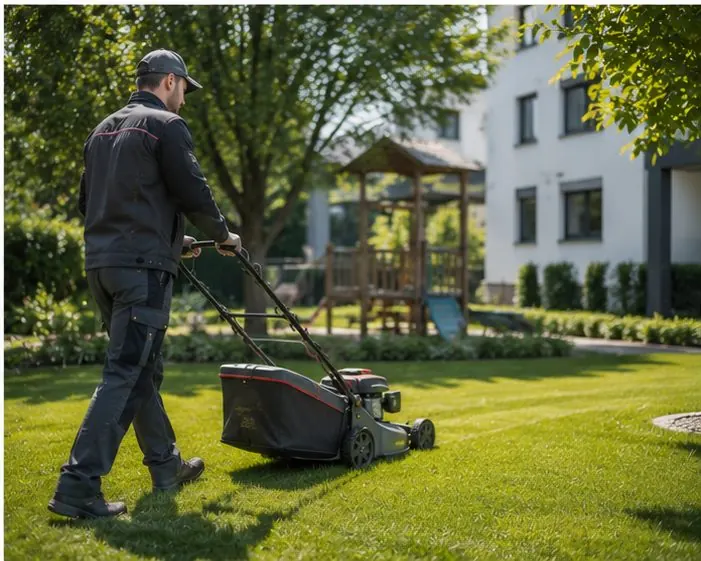

Hausmeister-Rundgang
Wöchentlich oder 14-tägig, mit fester Checkliste und Kurzbericht.
Leistung · Objektbetreuung
Ein Objekt läuft gut, wenn sich jemand kümmert, bevor sich jemand beschwert. Wir betreuen Ihre Immobilie mit festen Rundgängen, kurzen Wegen und einer Abrechnung, die Ihre Buchhaltung mag.
Der feste Rundgang
Bei jedem Rundgang arbeiten wir dieselbe Liste ab – vom Eingang bis zur Mülltonne. Kleinigkeiten beheben wir sofort, alles andere melden wir mit Foto und Vorschlag.

Leistungsbausteine
Jedes Objekt ist anders. Sie wählen die Bausteine, wir schnüren daraus einen festen Vertrag mit klarem Monatspreis.
Wöchentlich oder 14-tägig, mit fester Checkliste und Kurzbericht.
Tropfende Hähne, klemmende Türen, defekte Leuchtmittel – direkt erledigt.
Eine Nummer für Ihre Mieter. Wir filtern, was wichtig ist, und handeln.
Im festen Turnus, mit gleichbleibender Qualität.
Rasen, Hecken, Wege und Mülltonnenplätze – gepflegt übers ganze Jahr.
Räumen, streuen, dokumentieren – inklusive Haftungsnachweis.
„Früher hatte ich für drei Häuser fünf Dienstleister und trotzdem ständig Anrufe. Heute habe ich eine Nummer – und Ruhe."
Schicken Sie uns Adresse und Eckdaten – wir schauen uns das Objekt an und schicken Ihnen ein Betreuungsangebot mit klarem Monatspreis.